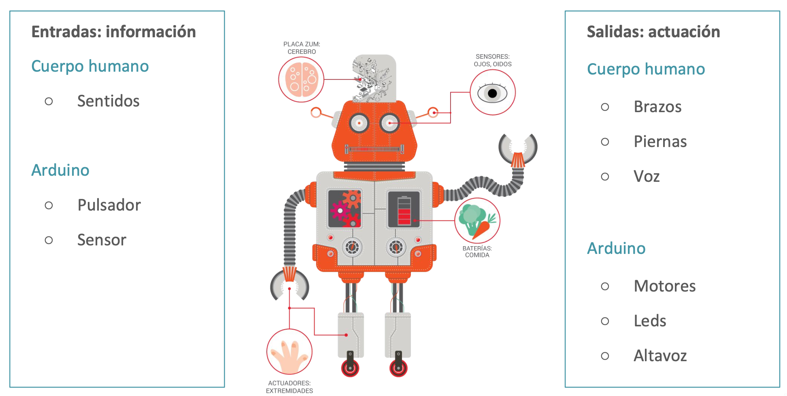
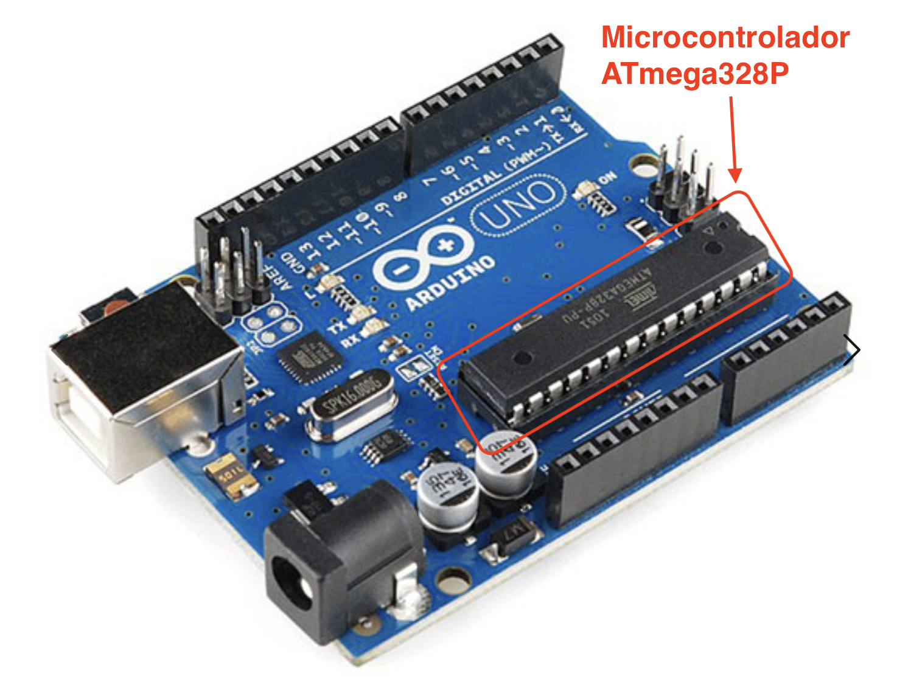
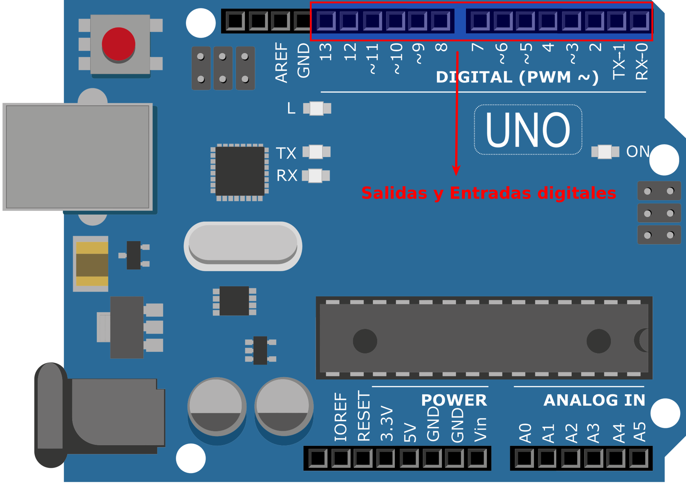
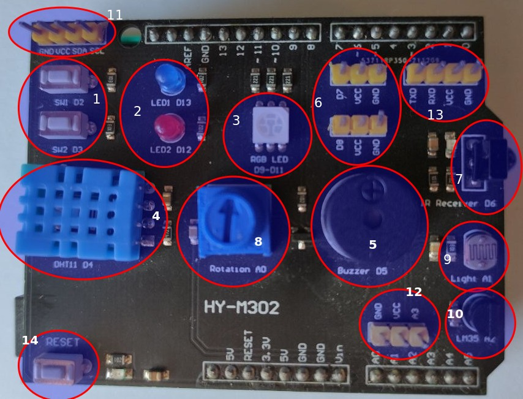
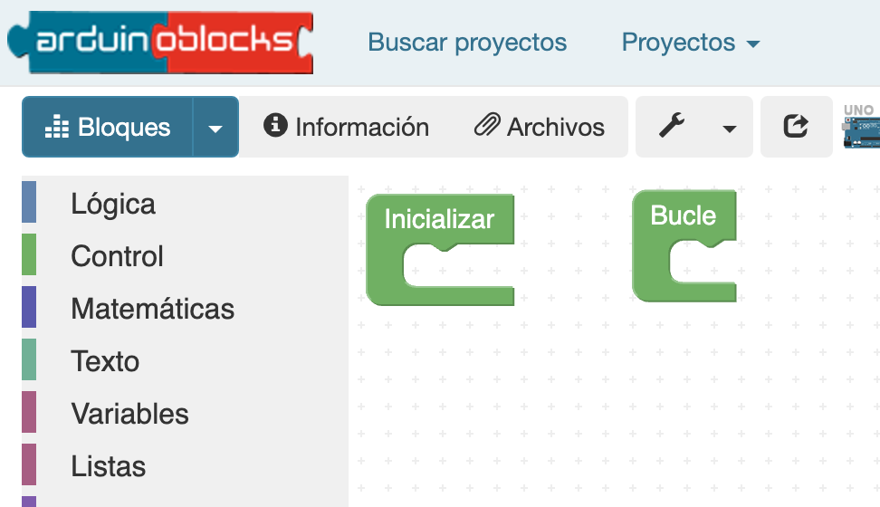
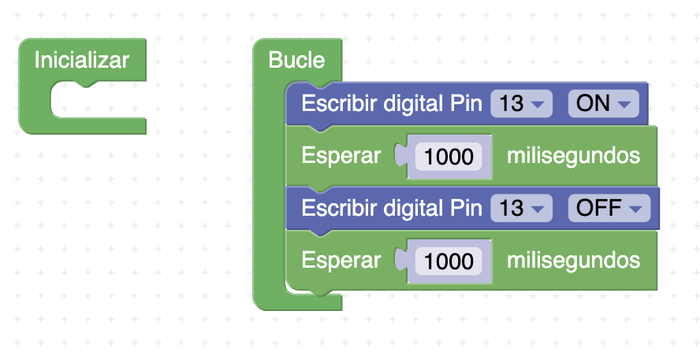
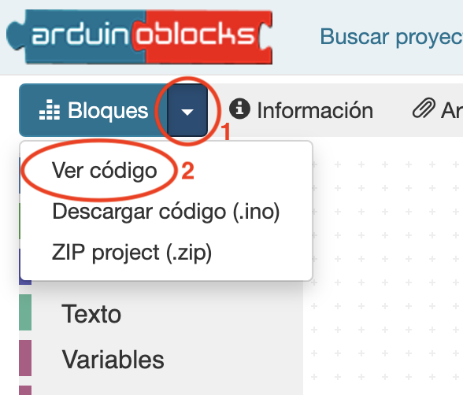
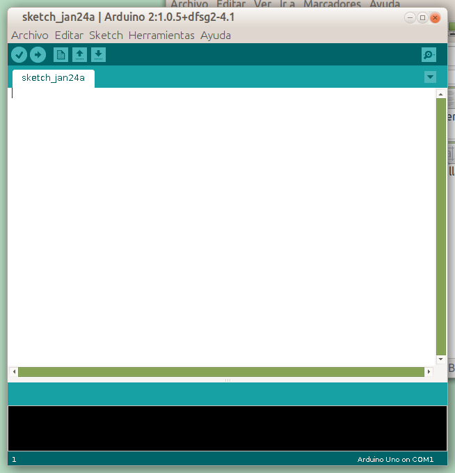
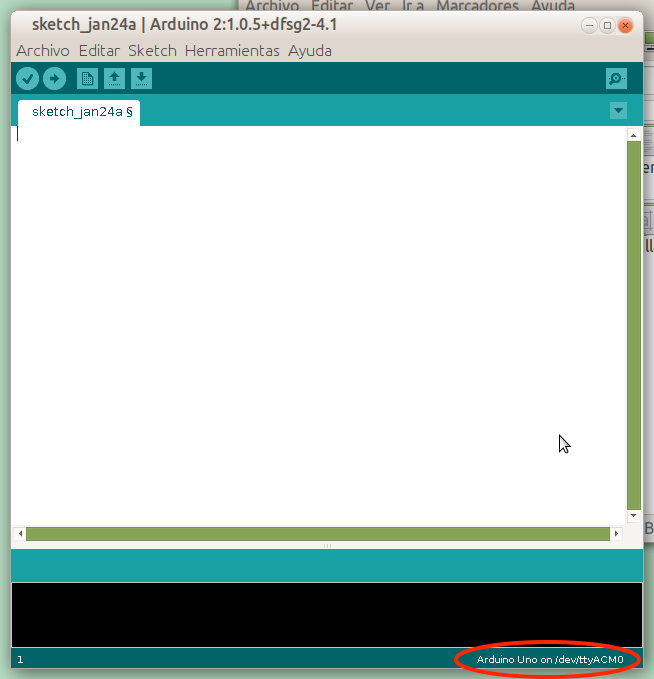
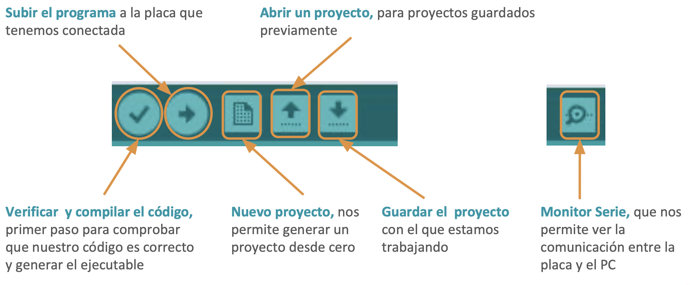

Llega el cerebro: Arduino
Arduino es una plataforma libre formada por una placa con un microcontrolador (el hardware) y un entorno para programarla (el software). Con ella podemos leer sensores y activar actuadores según un programa que escribamos. Podemos compararla con una persona:

Usaremos la placa más popular, la Arduino UNO. Su componente principal es el microcontrolador ATmega328P, con 32 KB de memoria flash (para el programa) y 2 KB de memoria SRAM (para los datos). Parece poco, ¡pero sobra para nuestros proyectos!

La placa tiene pines (patillas) para conectar sensores y actuadores: unos son
digitales (valen 0 o 1; los marcados con ~ también dan salidas PWM) y otros son entradas
analógicas (leen un rango de valores, de A0 a A5).

La estrella del curso: el shield del centro
Cablear cada circuito en clase lleva tiempo y da errores. Por eso montaremos sobre la Arduino un shield: una placa que encaja encima y que trae ya conectados un montón de componentes. Es como una protoboard con el circuito hecho por dentro de fábrica.

Este es su mapa. No hace falta memorizarlo (está también en la chuleta), pero fíjate: cada componente tiene su pin FIJO, y ese número es el que pondrás en tus bloques toda la unidad.
| Componente del shield | Tipo | Pin |
|---|---|---|
| LED azul / LED rojo | Salida digital | 13 / 12 |
| LED RGB | Salida PWM | rojo 9 · verde 11 · azul 10 |
| Zumbador | Salida | 5 |
| Pulsadores SW1 / SW2 | Entrada digital | 2 / 3 |
| Potenciómetro (rueda) | Entrada analógica | A0 |
| Sensor de luz (LDR) | Entrada analógica | A1 |
| Sensor de temperatura (LM35) | Entrada analógica | A2 |
| Sensor de temperatura y humedad (DHT11) | Entrada digital | 4 |
| Receptor de infrarrojos (mando) | Entrada digital | 6 |
| Puertos libres para ampliar | — | 7, 8 y A3 |
Programar con bloques: STEAMakersBlocks
Programaremos con STEAMakersBlocks, un entorno de bloques (como Scratch) para Arduino. Encajas bloques, no escribes código, así que no puedes cometer errores de escritura. Cada programa tiene dos partes fijas:

| Bloque | Cuándo se ejecuta |
|---|---|
| Inicializar | Una sola vez, al arrancar la placa (preparar pines y variables). |
| Bucle | Se repite sin parar, una y otra vez, mientras la placa esté encendida. |
Práctica guiada · Tu primera luz real, paso a paso
- Entra en STEAMakersBlocks con el usuario que te indica tu profesor y crea un proyecto nuevo de tipo UNO llamado exactamente S3 parpadeo.
- En el bloque Bucle, encaja esta secuencia: escribir digital pin 13 ON →
esperar 1000 ms → escribir digital pin 13 OFF → esperar 1000 ms. Debe quedarte así:

El pin 13 es el LED azul del shield. - Pulsa la flechita junto al botón «Bloques» y elige «Ver código»: aparece el programa
traducido al lenguaje de Arduino. Cópialo con el botón Copiar.

- Abre Arduino IDE en el ordenador del aula, borra el contenido del sketch de ejemplo
y pega tu código.

- Conecta la placa (con el shield puesto) al USB y comprueba abajo a la derecha que aparece
«Arduino Uno» con su puerto. Si no aparece, revisa el cable.

- Pulsa el botón de subir (la flecha →). Cuando termine…
el LED azul del shield parpadea. ¡Tu primer programa controlando el mundo real!

El flujo de trabajo de toda la unidad
1) Bloques en STEAMakersBlocks → 2) «Ver código» y copiar → 3) pegar en Arduino IDE y subir → 4) ver el resultado en el shield. Cuando quieras montar el circuito además de programarlo, usarás TinkerCAD (S4 en adelante).
Tarea S3 · Hazlo tuyo
Cambia el programa para que el LED azul esté encendido 250 ms y apagado 750 ms, y súbelo a la placa. Añade estos dos archivos a la tarea «Tareas de Arduino (S2–S7)» de Classroom — solo añadirlos, sin pulsar «Entregar»: esa tarea se entrega al acabar la S7 con todo dentro:
- Una captura de tus bloques, con el nombre s3_bloques.png.
- Un vídeo corto (5-10 s) del shield funcionando. Dentro del vídeo debe verse un papelito escrito a mano con tus iniciales y tu curso (así sabemos que el montaje es tuyo). Guárdalo como s3_parpadeo.mp4.
Recuerda
El nombre del archivo que entregues no debe llevar tu nombre ni tus apellidos:
usa exactamente los nombres que indica cada tarea (aquí, s3_bloques.png y s3_parpadeo.mp4). (El papelito del vídeo lleva solo iniciales.)